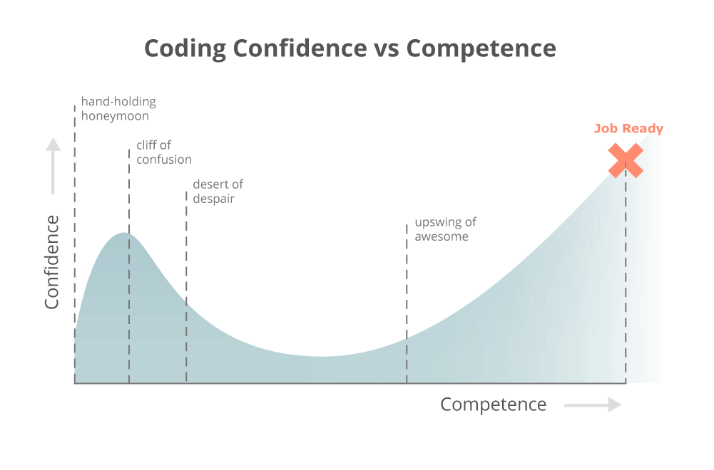

So before the end of my junior year I really liked math. Who doesn't like these logical problems. I connected the dots and saw how to apply math knowledge and wanted to continue my math career. Thus, I took a summer calculus course to get into BC calc my senior year. There I actually learned to love math. I really started searching out math history and broaden my knowledge of math to what is not just taught in the class. Since my programming and computer science knowledge prior to the class was strengthened because I crossed the confidence valley.
Everything I learned in that alc class was applicable to my programming career. I will soon be putting those projects on my github. So in my endeavour I was finding new math theorems, essays(Some that did not have adequate space in the margins :P), professors, and subjects like topology, shapes, etc. Then I saw the Mandelbrot set. What the *$*! is this, its so crazy and pleasing to look at. Then at computer science club we would watch a mandelbrot zoom for actual dozens of minutes(We are weird). I just had to make one!
Boring Math: The Mandelbrot set is the set of complex numbers c for which the function f(z) = z^2 + c does not diverge when iterated from z=0, i.e., for which the sequence f(0),f(f(0)), etc., remains bounded in absolute value. Basically it is the set of all complex numbers on a complex plane that converge with their output of a fractal after X iterations. Coloring for the outside of the set is done by seeing how many iterations it completes before it diverges to infinity. Coloring on the inside is done by the distance of the point to the origin(remember it's a complex plane so it's going to have a cool coloring affect).
Check out the code on my Github. It works on newer phones because of needed memory management. Basically the code tanks the input of where you want the base coords of a Julia set. If 0+0i is entered(0 for a, 0 for b for a+bi) then it will generate a mandelbrot set according to how many iterations and degree of epsilon. The code then generates the sets by moving through the real and imaginary axes by the amount epsilon and putting the coordinate through the according fractal.
What I personally love about this set of number is that it demonstrates the infinite gap between any 2 points. If you were to zoom into one singular point on the set near the edge you will see the set repeat with in itself and within that repeat you will see the same set. Also you will see every julia set. It shows the abstract complexity within the beauty of math shown through colors.